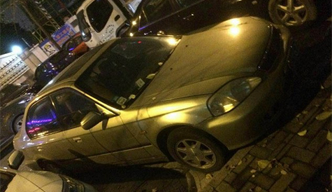

发布日期：2016-07-08
先来说下，2.4 si 跟新款1.5T 版本的，最近几天测试视频不断的涌出，我也简单的说下自己的观念，本田本来就是最早黑科技被禁，所以才研究高转，自吸。但是时代在改变，涡轮是迟早的事，目前分成了2大派，一派支持2.4自吸才是王道，本田太久没做涡轮了，一上来就出的涡轮，买帐的人不好说多不多，只能说更多的人保持迟疑态度观望，另一派，还是本田+涡轮=王道，这种想法，时代在进步，科技在发展，涡轮打开的瞬间，是猛，非常猛，非常非常猛。再加上市场上的快餐式刷电脑，弯道的王者，还能留下几分的精彩。这些都是看以后了。
个人还是支持本田+涡轮的，当然，这个只是推荐玩家，如果你只是个代步党，不深入玩，最多玩玩外观，操控就行了，对动力没太大要求，还是自吸才是王道。
在你们都在热烈讨论新思域的时候，我在温州的角落发现了它，ek3（ek1的外观，ek3的动力。）D15z4，AT
